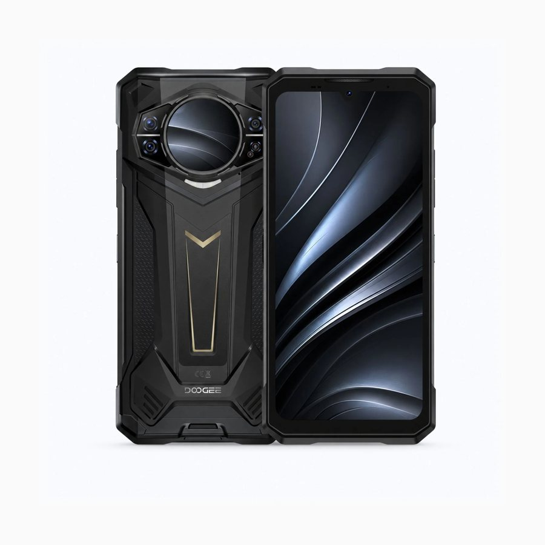
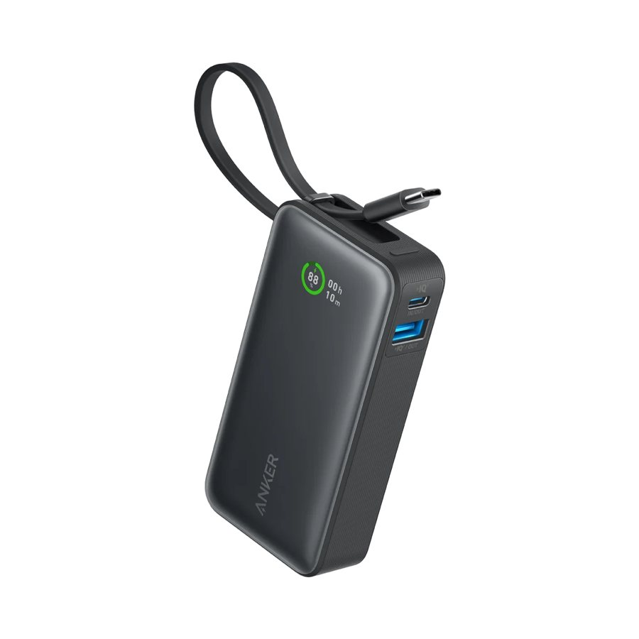
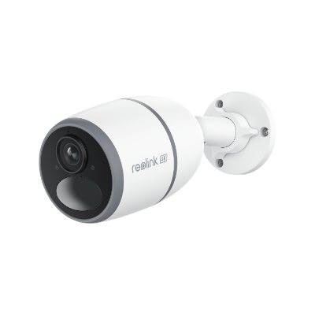
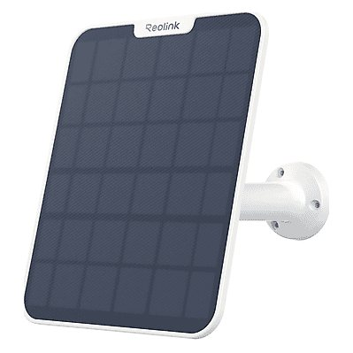
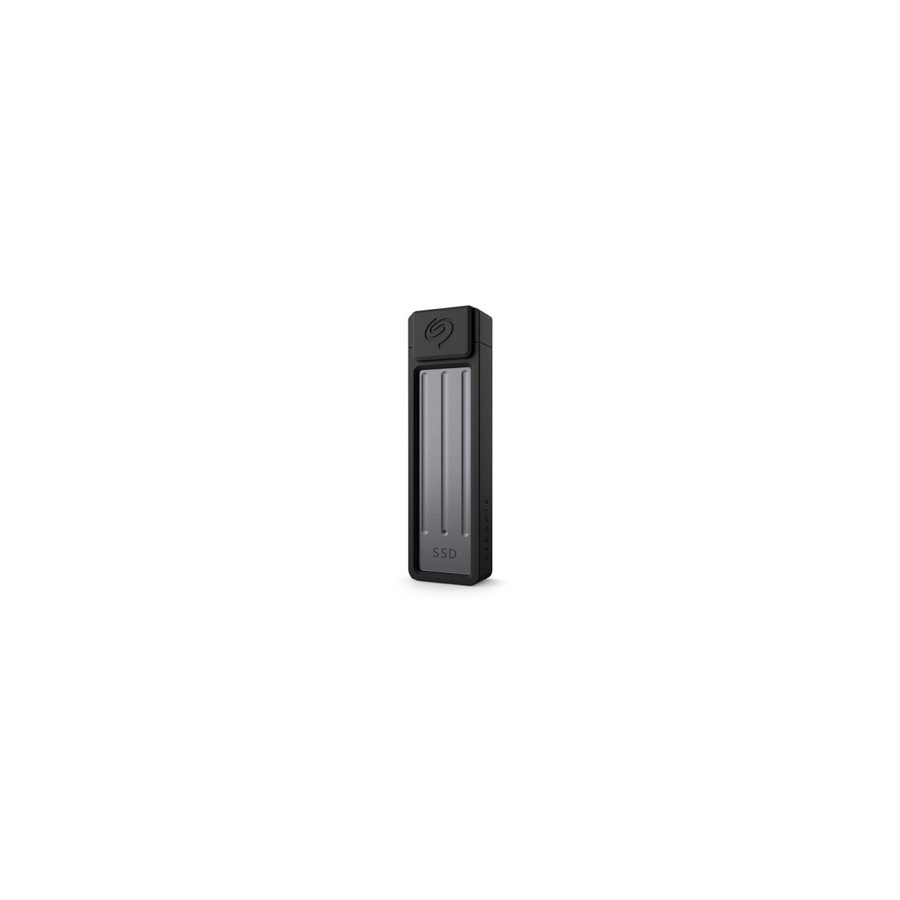
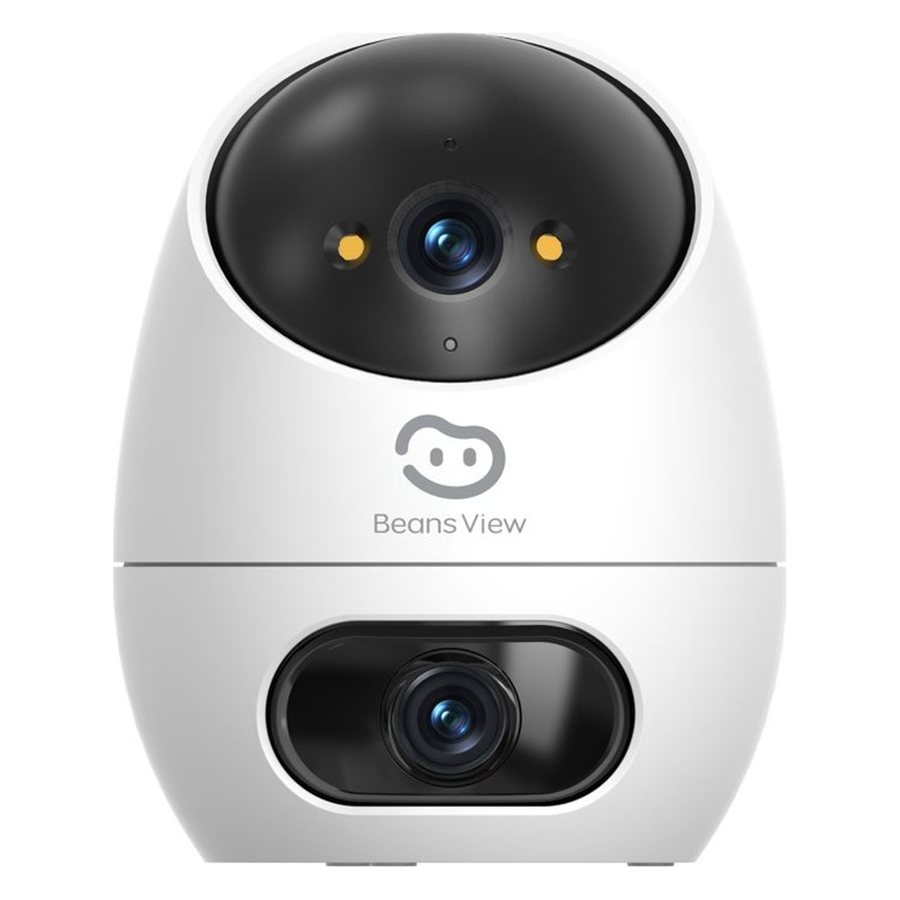

图片仅供参考，展示产品类型。
电子产品
55英寸数字标牌显示屏，4K，安卓系统，500 cd/m²，壁挂安装
55英寸LCD广告显示屏，内置安卓播放器，适用于餐饮、零售、酒店和前台区域的菜单屏、广告和信息展示。
55英寸数字标牌显示屏（横向、壁挂安装）用于餐饮、零售、酒店和前台区域展示菜单、广告和信息。内置安卓播放器（Android 11或更高，可选Windows）可通过U盘或网络播放内容，500 cd/m²亮度和178°可视角度保证明亮室内的可读性。企业买家期望具备7×24小时连续运行许可、明确的面板来源、CMS接入和远程维护，以及有文件证明的壁挂安全性。电子部分需具备CE（低电压、电磁兼容，带WLAN/蓝牙时另需RED）、RoHS，并作为B2B电器在stiftung ear登记；能效按电子显示器生态设计法规执行。
技术参数
| 屏幕 | 55英寸，显示区域1,210 × 680 mm，LCD |
|---|---|
| 亮度 | 约500 cd/m² |
| 可视角度 | 178°/178° |
| 系统/接口 | Android 11或更高（可选Windows）、遥控器、HDMI；触控可选（红外或电容） |
| 功耗 | 108 W（AC 100–240 V，50/60 Hz） |
| 安装/环境 | 壁挂安装，带安全锁；工作温度0–50 °C，存放温度−20至60 °C；玻璃硬度至少7H |
| 海关编码（HS） | 85285900 |
欧盟标准与法规
EN 62368-1音视频及信息技术设备安全，含壁挂安装的机械强度（指令2014/35/EU）EN 55032 / EN 55035电磁兼容：发射与抗扰度（指令2014/30/EU）RED 2014/53/EU · (EU) 2022/30 · EN 18031-1/-2无线电设备及网络安全，适用于安卓播放器内置WLAN/蓝牙的情形(EU) 2019/2021RoHS 2011/65/EU · REACH有害物质限制及SVHC信息义务ElektroG在stiftung ear登记为B2B电器；回收与处置证明
搭配产品

升级款

本类别其他产品

三防智能手机 （IP68/IP69K）防尘、防水、抗冲击的户外智能手机,适合现场负责人和工长在日常施工中使用。

三防5G智能手机 （热成像）配备热成像相机、6400万像素夜视和10600 mAh电池的5G户外智能手机,适合恶劣条件下的检查与记录。

10000 mAh 充电宝,22.5W快充紧凑型22.5W快充充电宝,在没有工地电源时为智能手机、对讲机和手持测量仪供电。

10-11英寸三防平板电脑 (IP68/IP69K,4G)防尘、防水、抗冲击的安卓平板电脑,用于现场施工日志、图纸查阅、缺陷记录和测量。

工地4G太阳能监控摄像机 (IP66,夜视)带太阳能板和电池的离网4G摄像机,用于工地安防和施工进度记录。

4K行车记录仪 (含后摄,12/24V,GPS,WLAN)双通道行车记录仪,用于运输车和卡车前往工地途中的事故与损伤取证。

14英寸三防笔记本电脑 (IP65,MIL-STD-810H,Windows 11)防尘防喷水的14英寸笔记本电脑,适用于现场管理、测量和检验记录,可直接在工地使用。

行车记录仪停车监控免接线套件 （12/24 V 转 5 V, USB-C, 低压保护）常电供电套件，含 12/24 V 转 5 V 转换器、USB-C 输出和可调低压断电保护，用于行车记录仪的停车监控模式。

高耐久 microSD 存储卡 128/256 GB （持续录像, V30, 适用于行车记录仪和监控摄像机）

4G/电池监控摄像机用太阳能板 6–10 W （IP65, 含安装支架）带安装支架、防护等级 IP65 的单晶硅小型太阳能板，为工地上的电池和 4G 监控摄像机持续供电。

移动电源 20,000 mAh，65 W USB-C PD （可充笔记本）带显示屏、65 W USB-C PD 的可充笔记本移动电源，在没有工地电源时为三防平板、三防笔记本和智能手机供电。

27英寸LED显示器，IPS，QHD 2560 × 1440 （75/100 Hz, HDMI + DisplayPort, 办公）27英寸IPS显示器，QHD分辨率，75/100 Hz，配备HDMI和DisplayPort接口，适用于办公、居家办公和图像处理。

办公迷你电脑 （台式, 铝合金外壳）紧凑型台式主机（196 × 196 × 60 mm），适用于办公、收银和数字标牌，配8核处理器、千兆网口、两路视频输出和VESA支架。

便携式固态硬盘 1TB USB-C口袋大小的外置固态硬盘,用于备份和数据传输。

WiFi 6 Mesh组网系统 AC1800用于全屋无缝覆盖的Mesh路由器。

WiFi灯泡摄像头 2K 360° 双向语音灯泡外形室内摄像头,支持移动追踪。

便携显示器 15.6英寸 FHD IPS USB-C/HDMI笔记本/手机用超薄副屏。

心率健身手环纤薄运动手环,带心率与睡眠监测。

4G LTE路由器 带SIM卡槽 (室内CPE,150Mbps)带电池的便携家用路由器,无需固网。

2.4G无线键鼠套装带USB接收器的无线办公套装。

GaN充电器 65W USB-C PD笔记本/平板/手机用小体积充电器。